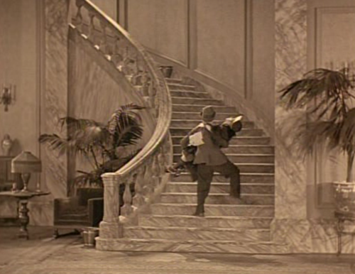
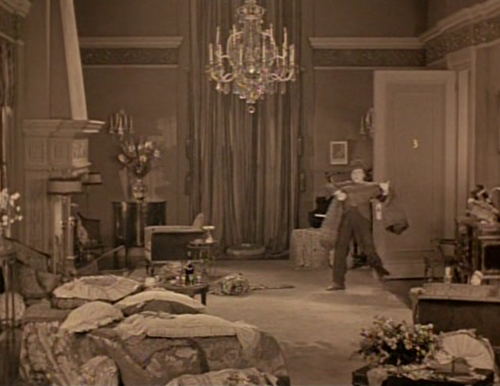

Is opulence always tied to an aesthetics of decay?
by phil on Tuesday Mar 23, 2010 1:26 AM

(Harry Langdon in the 1926 silent film The Strong Man)
I've been immersing myself in black-and-white silent films lately, and I've noticed a frequent aspiration toward upper-class wealth. There's an inordinate amount of luxury on display. The above image shows Langdon carrying a woman to her apartment, which opens up to this:

By itself, these shots aren't interesting, but in the dozen or so silent films I've seen, those kind of rooms appear everywhere. The doors are huge and open to rooms with super-high ceilings, pretty drapes and fancy furniture. I saw this in Flesh and the Devil, Foolish Wives, Intolerance, The Birth of a Nation, and The Big Parade. If silent films were all a historian had, she'd think that half of Americans lived in mansions.
This has more to do with the purchasing power of average Americans in the first three decades of the twentieth century. Since they were much poorer, opulence is portrayed as being wondrous. Today, though, the aesthetics of opulence leans closer toward gaudy, as luxury—or luxurious enough—is accessible to the average American. It's almost like the only suitable place for opulence is in the self-aware cliché of Las Vegas:

(Some random marble staircases in Vegas)
I want to go one step further, though, and say that the aesthetics of opulence is actually that of decay. When I think marble, I think Ancient Greco-Roman ruins. Luxury is always preserved in decay. Because luxury is always in a constant state of struggling against the elements. When I see marble staircases, I think of the recurring labor and material costs to maintain them. Even today, it takes semi-slave labor (in the form of undocumented workers being the primary caretakers of luxury) to maintain such opulence.
I yearn for the opposite aesthetics. I yearn for things that evoke a sense of durability and permanence. How can you convey that? Perhaps some wisdom can be found in the convergence of sustainability, minimalism, and nature. There are a beautiful rash of "green" homes cropping up all over Austin that look similar to this:

But even that evokes decay. Every nice wooden home I've been in is always at least five-percent off its perfect state. Is there anything that has a stable state that's the same (if not better) than how it is on day one? Is it possible to have a museum with no janitors or archivists?
Maybe slumming is the only genuine approach. Why buy nice jeans, when pre-frayed jeans will always look as good as when you bought them? Perhaps a beach chaotically adorned with plastic bottles has more durability than whatever marble coliseum we attempt to build. Somehow, the opposite of what we want to last forever ultimately does.
Curiously, I'm listening to Gorillaz's Plastic Beach right now.
Comments
Aimee said on July 29, 2010 1:36 AM:
I do appreciate what you are saying, however I'm sure you've realized that the natural 'order' of things is to deterioriate... move from order towards chaos. No matter what type of home you ascribe to have, whether opulent or simply functional and durable, there will be maintenance involved. I have an asbestos tile roof on the home in which I live with a lifetime guarantee. The tiles are guaranteed, however, some have still managed to become dislodged. So the material is durable, but the roof still requires maintenance.
I was also thinking (scary thing that is... ha ha) that to have such a home as you described, it would quite possibly have to already exist in nature. A cave home came to mind. There is much to be said for the durability of a cave, is there not? Over time, centuries, I'm sure... that cave will also show signs of wear. But it will outlive you, I'm sure. There are quite possibly other 'natural' homes that will endure the test of time. All will cost a fortune, though be easy on the maintenance side of things.
The bottom line is this: It isn't in the natural order for objects to appreciate in value. Relationships, fine wines and some odd cheeses do... ha ha... but a home most likely never will.